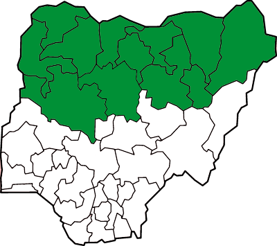
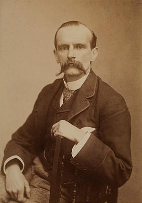
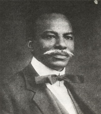
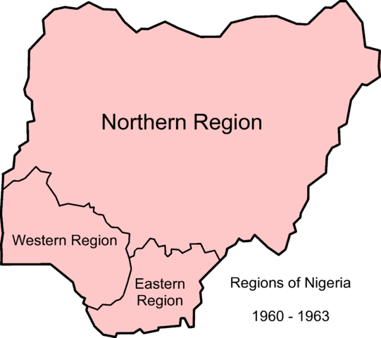
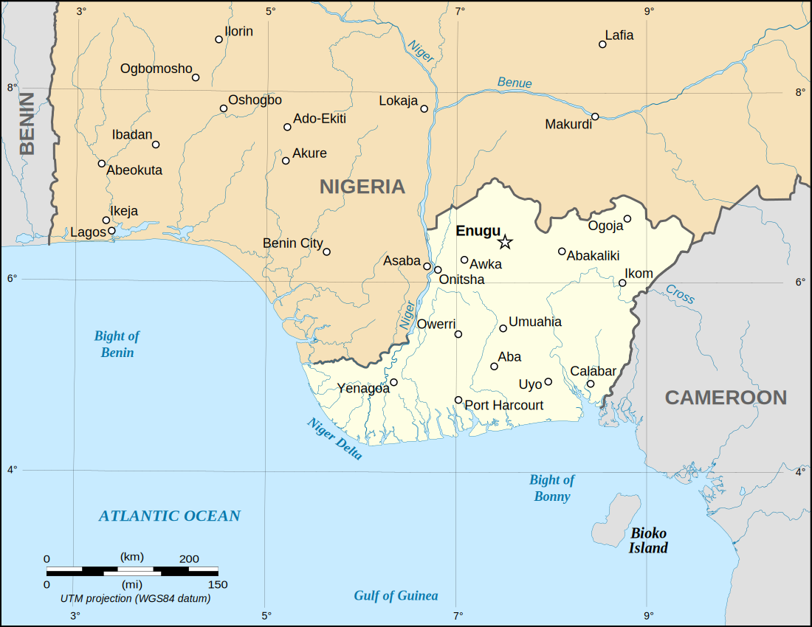
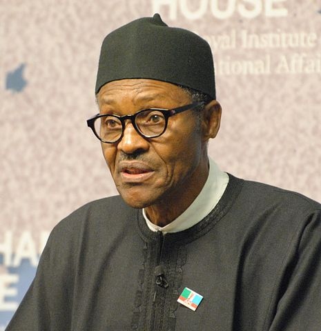
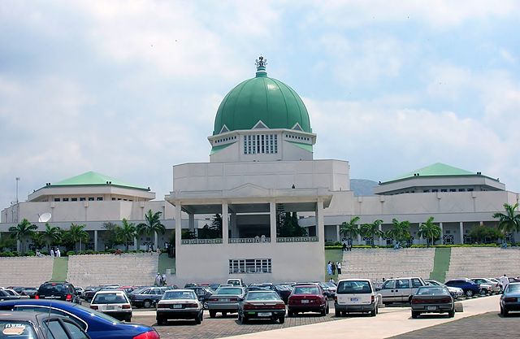
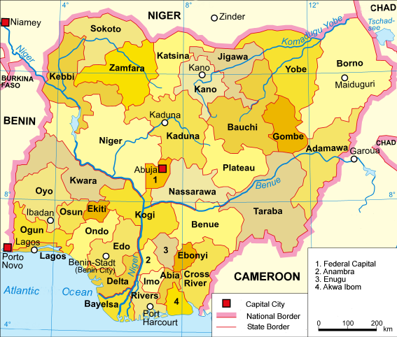
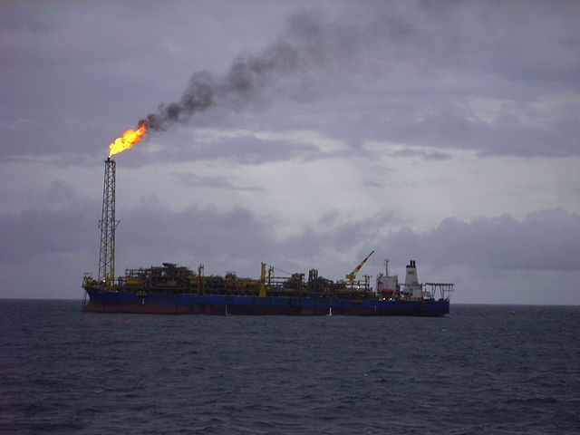

Nigeria

Dr. Christopher N. Lawrence
Middle Georgia State University
POLS 2301: Comparative Politics
🔊 Disable Narration
Geography

Nigeria (officially, the Federal Republic of Nigeria) is the most populous country in Africa and the 7th most populous country in the world. It is located in West Africa.
Before the Europeans
Nigeria home of several civilizations before Europeans arrive in the 15th century:
- Southwest dominated by the Yoruba, who had a centralized empire.
- Southeast home to the Igbo, network of largely-independent villages.
- North: Hausa and Fulani peoples; converted to Islam in 9th century A.D.
Today, the division between the largely Muslim north and the Christian south remains, and reinforces the ethnic distinction between the various Nigerian peoples.
Early European Influence
The first European nation to exert influence was Portugal in 1471; other European nations would follow.
European exploration was limited by both disease and the hostile climate, so rather than exploiting inland resources they capitalized on what was immediately at hand: people.
The practice of slavery in Africa was nothing new, but the Europeans brought it to a much larger scale. Millions of people from southern Nigeria and elsewhere along the African coast were enslaved; most were shipped from Africa to the Americas to work on plantations of cotton, sugarcane, and tobacco across the Atlantic.
19th Century Nigeria
A war in the early 19th century in the north led to the establishment of the Sokoto Caliphate, a strictly Islamic state.
Meanwhile, in the south Christian missionaries began to spread inland and were later followed by European soldiers and governments to help protect them.
British Involvement
Nigeria began to come under British influence in the mid-1800s as a result of the British Navy's crackdown on slavery and the slave trade. They replaced the trade in people with trade in commodities, particularly oils.
However, although the slave trade was ended, slavery within the area continued. To put a stop to slavery altogether, Britain fought battles against the Yoruba in the southwest and eventually took over the Yoruba capital, Lagos, in 1861.
British Influence Expands
In the following years, British traders began to work their way inland along the Niger River and its tributaries, spreading British influence further in West Africa.
As part of the “Scramble for Africa,” Britain and other European powers spread their claims and influence as wide as they could, leaving a patchwork of borders that often had little to do with Africa's ethnic or religious divisions. The land that would become Nigeria was no different.
Inventing Nigeria
Modern Nigeria was formed from two distinct territories under British rule: a southern protectorate in the Yoruba and Igbo lands, and the largely Muslim north.
The two territories were merged in 1914 under the leadership of Frederick Lugard, an experienced colonial administrator.
However, the main reason why the merger took place was not political—instead, it essentially was done for economic reasons: the north was running a budget deficit, and the south had a budget surplus.
Divide and Rule
Most British colonies in Africa and Asia were not settler colonies like Australia or Canada, and Britain never intended to make its colonies part of Britain proper.
Instead, in these colonies a small ruling class of colonial administrators presided over millions of natives. They used divide and rule techniques, playing groups of local populations against each other so they would not work together to overthrow the British.
The British also ruled indirectly, using local rulers and elites rather than imposing a European ruling elite.
Limited Self-Rule
Divide-and-rule made it easier for former British colonies to govern themselves when they reached independence, but also deepened the internal divisions in those societies.
The British also tended to allow more self-rule in their colonies than most of the other European powers. Colonies typically had an unelected council of local elites that the governor would consult; elections would be eventually introduced to provide for limited direct representation.
In Nigeria, this pattern was followed, although southerners were better represented than northerners in its Legislative Council.
Decolonization
The Second World War weakened colonialism throughout the world. Colonial powers no longer had the wealth to sustain their sprawling empires, and the rhetorical commitment of the Western Allies in their fight against the Axis to freedom and anti-totalitarianism clashed with the reality of colonial rule.
The peak period of decolonization in Africa was during the 1960s. It was easier in colonies like Nigeria that had few European settlers than it was in colonies that had large numbers of settlers like Rhodesia (now Zimbabwe).
Nationalist Parties
Decolonization in Nigeria was a gradual process. The first Nigerian political party, Nigerian National Democratic Party, was founded in 1923 by Herbert Macaulay.
During World War II, Macaulay and other Nigerians formed the National Council of Nigeria and Cameroons (NCNC), a “big tent” nationalist party. Other pro-independence parties were founded in this era as well, some based on regional or ethnic interests, including the Action Party.
Steps toward Independence
In 1947, Britain established a federal structure for Nigeria, with three regions corresponding to the major ethnic groups: Northern, Western, and Eastern.
A national House of Representatives was established in 1951, and the federation and the regions were allowed self-government in most areas in 1954.
Western Nigeria was under the control of the Action Party, the NCNC dominated the Eastern region, and the North was controlled by the Northern People's Congress.
The Independence Period
Nigeria formally became independent on October 1, 1960. It briefly had a federal parliamentary system modeled on Britain's, and retained Queen Elizabeth II as head of state.
In 1963 it abolished the monarchy and became a federal parliamentary republic.
In 1966, a pair of military coups ousted the civilian government amid regional tensions and widespread corruption.
The Nigerian Civil War
From 1967 to 1970, partially due to the coups, a rebellion in the Eastern Region led to the attempted secession of the Igbo-dominated Republic of Biafra. Several million people died as a result of the fighting.
Praetorianism
Nigeria was under military rule 1966–79 and 1983–99.
In theory, military rule should bring stability, but even under military rule there are factions within the military that plot against each other.
Although they often took office to stamp out corruption, military rulers were not immune from becoming corrupt themselves. Several were also implicated in serious human rights abuses.
Two former military rulers, Olusegun Obasanjo and Muhammadu Buhari, have been elected as presidents during the current democratic period.
The Presidency
Since 1979, Nigeria has had a presidential system like that of the United States.
Nigerian presidents serve a four-year term in office and may only serve as president for two terms.
The current president is former military ruler Muhammadu Buhari of the All Progressives Congress, who won the election in March 2015 with around 54% of the national vote; took office on May 29th, 2015.
Vice president Oluleki “Yemi” Osinbajo served as acting president from January to March 2017, when Buhari sought treatment for an illness in London.
The House of Representatives
The Nigerian legislature is known as the National Assembly.
The Nigerian House of Representatives has 360 members, which are apportioned to the states and the Federal Capital Territory (Abuja) on the basis of population.
Like in the U.S. and Britain, representatives are chosen by the simple plurality (first-past-the-post) election system from single-member districts in each state. Representatives serve four-year terms.
The Senate
Nigeria's Senate includes 109 senators: 3 from each of the 36 states, elected from districts within the states (not statewide), and one from the Federal Capital Territory (Abuja).
Senators also serve four-year terms.
States of Nigeria
Although Nigeria was originally divided into three regions at independence, over the years it has been subdivided even further. Since 1996, Nigeria has included 36 states.
In addition, the Federal Capital Territory was established in 1976 as the home of the planned capital city of Abuja, which officially became the capital in 1991, replacing Lagos in the southwest.
Nigerian Federalism
Like in other countries, federalism allows the people in the various states to govern themselves somewhat differently from others.
In Nigeria this is particularly pronounced because of the use of sharia or Muslim law in northern states, which mean those states have very different laws than those in the Christian-dominated southern states.
However, since the national government controls the revenues from oil, states depend heavily on federal funding; they don't always have as much independence as they might appear to on paper.
Political Parties
Political parties in Nigeria are still somewhat immature.
The former ruling party, the People's Democratic Party (PDP), held power since the return of democracy in 1999 until 2015. Of the two groupings, they tend to be more economically conservative.
The All Progressives Congress (APC) is a newly-created party formed to contest the 2015 election. Its members tend to be more economically liberal.
Both parties tend to be very socially conservative by European or American standards, reflecting the strong Christian and Islamic influences in Nigerian society.
Divisions in Nigerian Society
The major divisions are religious, geographic, and ethnic, and these categories tend to go together; most ethnic groups are heavily associated with either Islam or Christianity, and concentrated in particular regions.
Today Muslims outnumber Christians in Nigeria as a whole, although Christians tend to be better off and historically have held more power in Nigerian politics.
A major problem is that most of Nigeria's divisions tend to reinforce each other, rather than being “cross-cutting cleavages” that mean that people tend to have things in common with other people outside their group.
Human Rights Issues
Internal conflict, including with Boko Haram and other terrorist/militant groups.
Government abuses under military and civilian rule.
Rights of gays and lesbians.
Rampant corruption.
Development and Oil
Benefits of oil wealth have been squandered through corruption and waste.
Political conflict over whether oil-producing regions receive their fair share of oil revenues.
Improving matters would lead to benefits for Nigerian society.
Prospects for Democracy
The 2015 elections and the mostly peaceful handover of power from the PDP to the APC is a major milestone for Nigeria, much like the PRI giving up power to the PAN in Mexico in 2000.
It remains to be seen whether the military will avoid the impulse to intervene at the first sign of trouble, and whether the APC can govern effectively as a single party after only just unifying in the past two years.
Nonetheless Nigerians seem to want democracy to work and will likely get a lot of outside support to help them succeed, unlike during the immediate post-colonial period.
Copyright and License
The text and narration of these slides are an original, creative work, Copyright © 2015–17 Christopher N. Lawrence. You may freely use, modify, and redistribute this slideshow under the terms of the Creative Commons Attribution-Share Alike 4.0 International license. To view a copy of this license, visit http://creativecommons.org/licenses/by-sa/4.0/ or send a letter to Creative Commons, 444 Castro Street, Suite 900, Mountain View, California, 94041, USA.
Other elements of these slides are either in the public domain (either originally or due to lapse in copyright), are U.S. government works not subject to copyright, or were licensed under the Creative Commons Attribution-Share Alike license (or a less restrictive license, the Creative Commons Attribution license) by their original creator.
Works Consulted
The following sources were consulted or used in the production of one or more of these slideshows, in addition to various primary source materials generally cited in-place or otherwise obvious from context throughout; previous editions of these works may have also been used. Any errors or omissions remain the sole responsibility of the author.
- Michael G. Roskin. 2015. Countries and Concepts: Politics, Geography, Culture, 13th ed. Upper Saddle River, New Jersey: Pearson.
- Various Wikimedia projects, including the Wikimedia Commons, Wikipedia, and Wikisource.